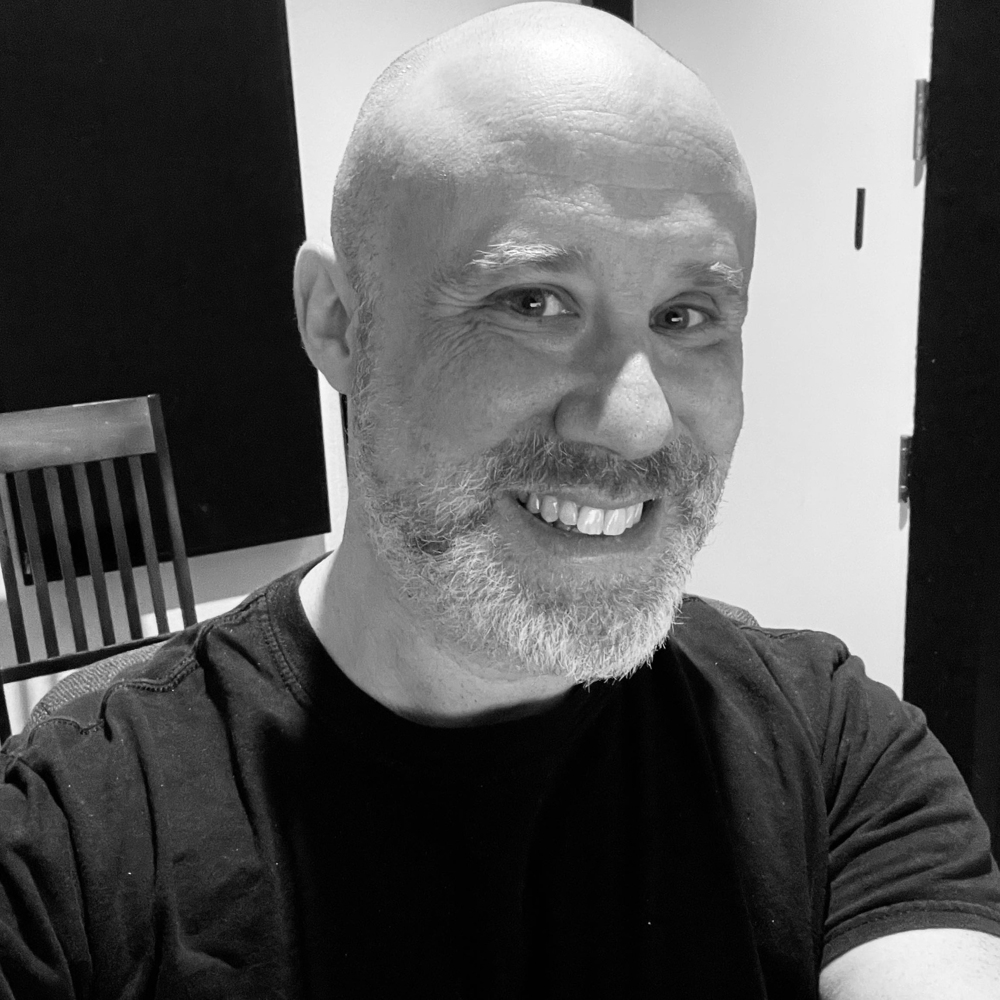

From Alex
I built Funky Rustic so the work could stand under a name larger than just me, while still keeping the focus where it belongs: making the best audio possible for the project in front of us.
The goal is steady, meaningful work, room to breathe now and then, and audio that feels specific to the game instead of assembled from standard solutions.